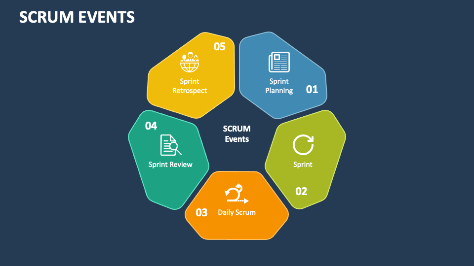

Core Principles
3 Pillars of Scrum:
- Transparency: all team members should have visibility into what's happening, which tasks are in progress, and any blockers, etc.
- Inspection: progress, quality, and alignment with goals need to be regularly checked during the project.
- Adaptation: the team must be able to quickly change and respond to new information or feedback.
Scrum Roles
3 Key Roles:
- Product Owner
- Scrum Master
- Development Team
Scrum Artifacts
- Product Backlog is the primary list of work that needs to get done and maintained by the product owner or product manager.
- Sprint Backlog is the list of items, user stories, or bug fixes, selected by the development team for implementation in the current sprint cycle.
- Increment (or Sprint Goal) is the usable end-product from a sprint.
Scrum Ceremonies or Events
Scrum Ceremonies or Events

Scrum Ceremonies or Events
- Sprint Planning
- Sprint
- Daily Scrum or Stand Up
- Sprint Review
- Sprint Retrospective
Scrum Values
- Courage to do the right thing and work through difficult problems.
- Focus on delivering value to users, customers and stakeholders every Sprint.
- Commitment to achieving the Sprint Goal, Product Goal and Definition of Done.
- Respect each other's experiences, backgrounds and abilities.
- Openness about all work and any challenges with performing that work.
Conclusion
Why Choose Scrum:
- Simple structure, clear roles and processes
- Great for managing complex tasks
- Increases transparency and ownership
- Regular releases = faster results
- Requires adaptation, but delivers strong long-term value ✅
Thank you for your attention!🐱